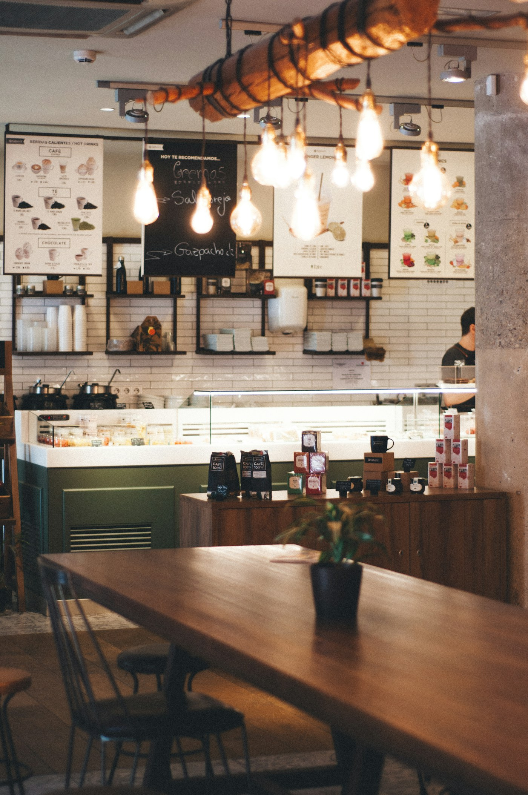
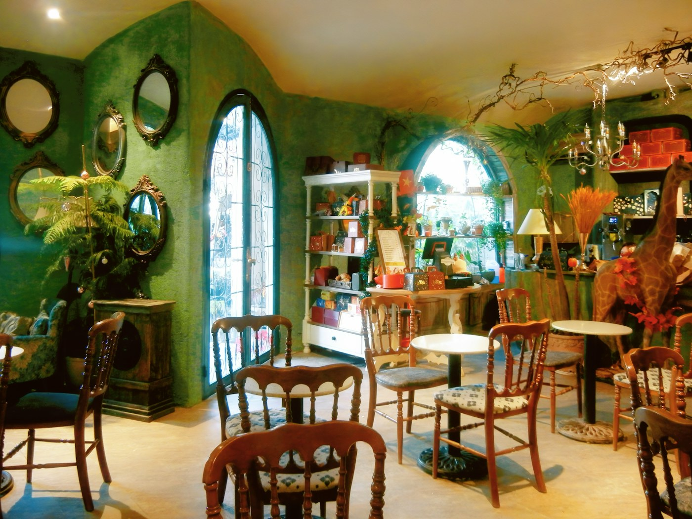
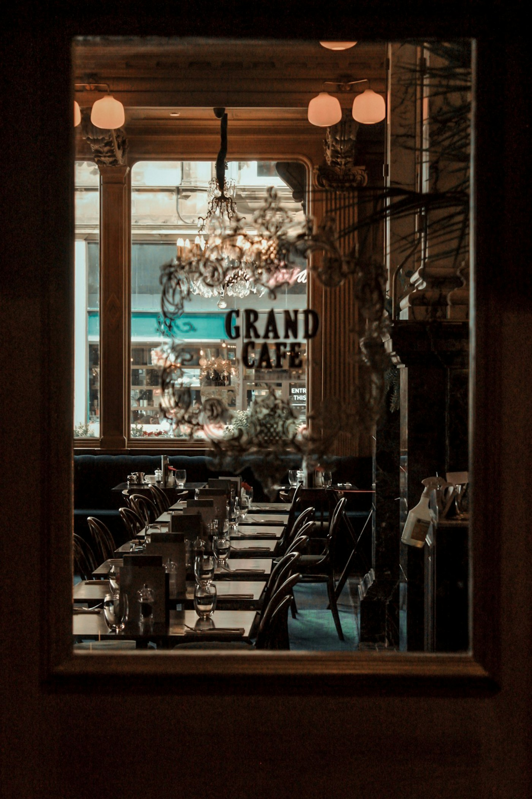
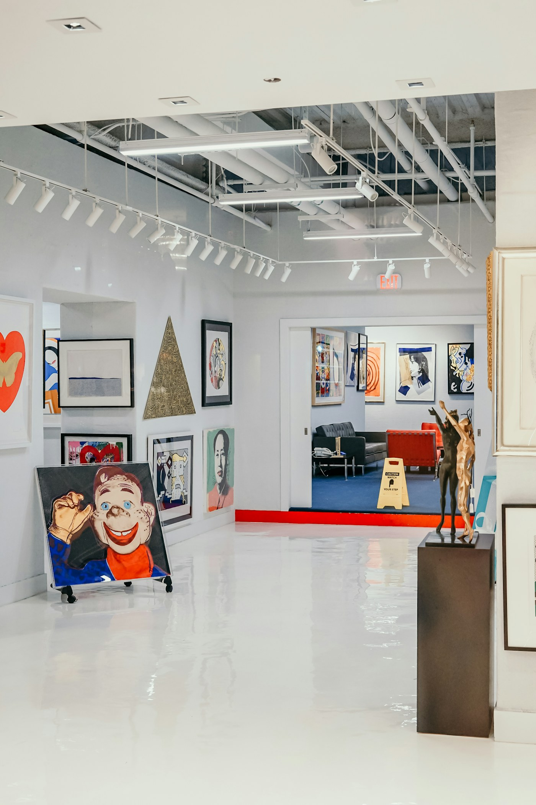
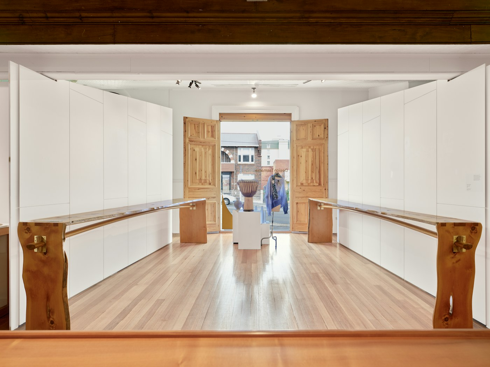
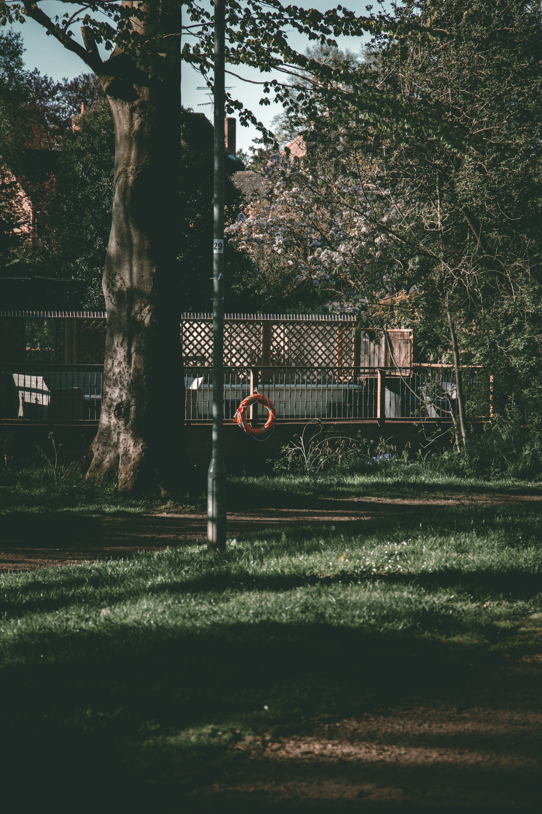
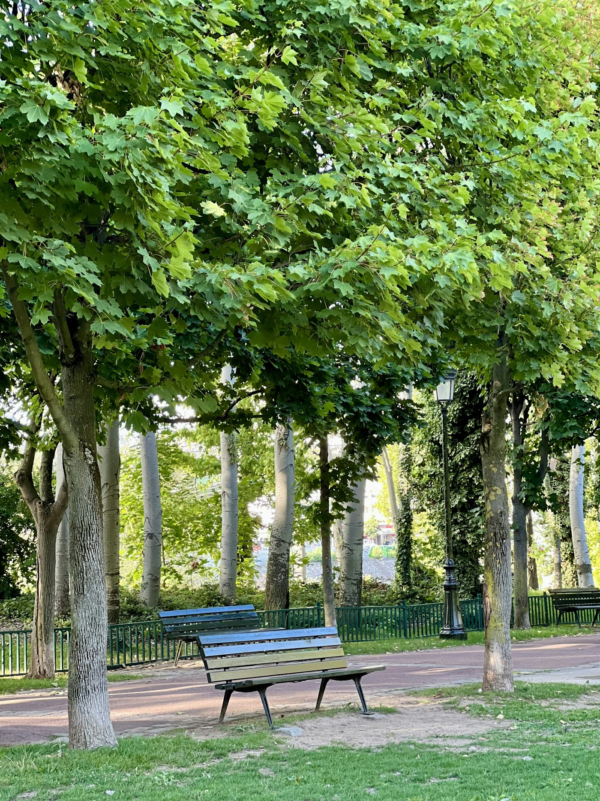
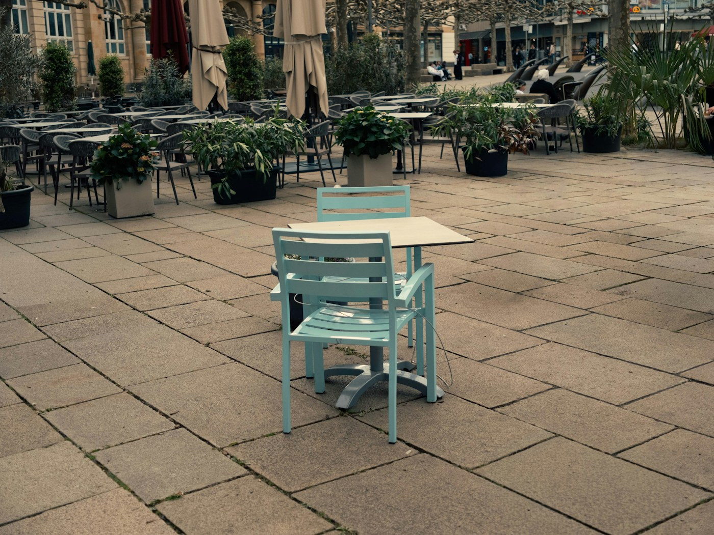
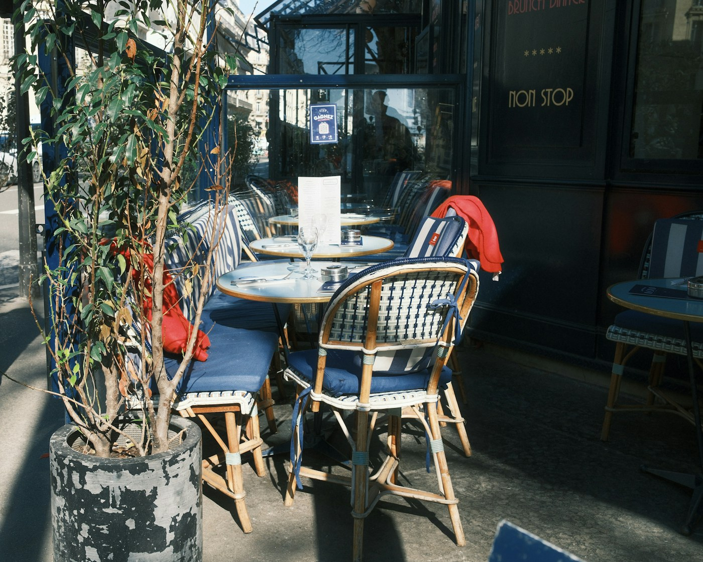
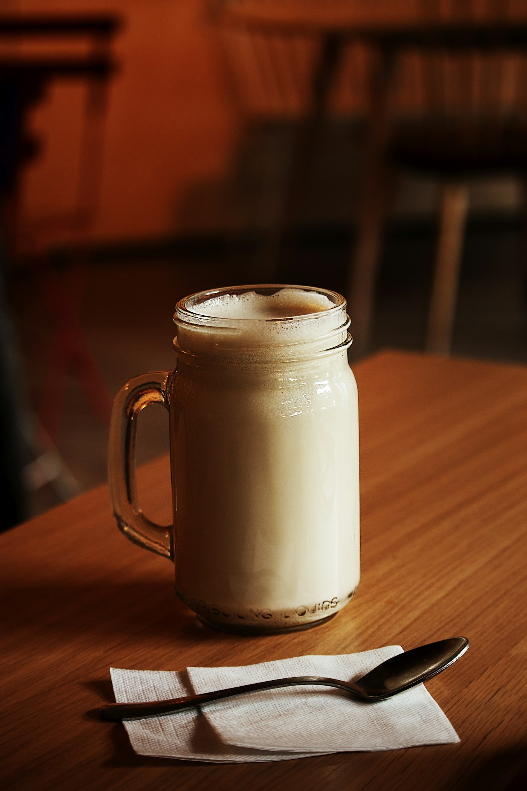
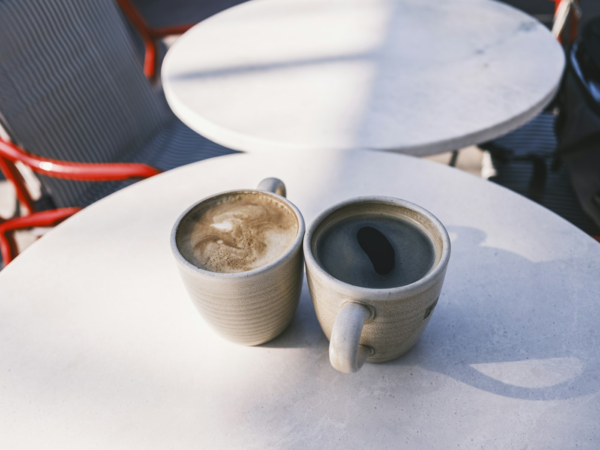
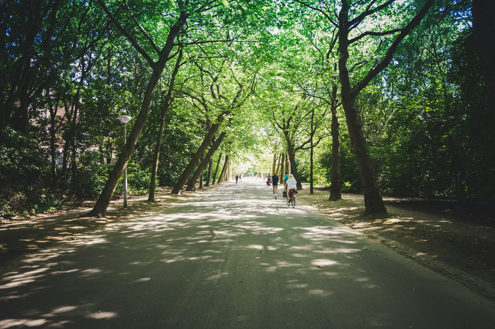
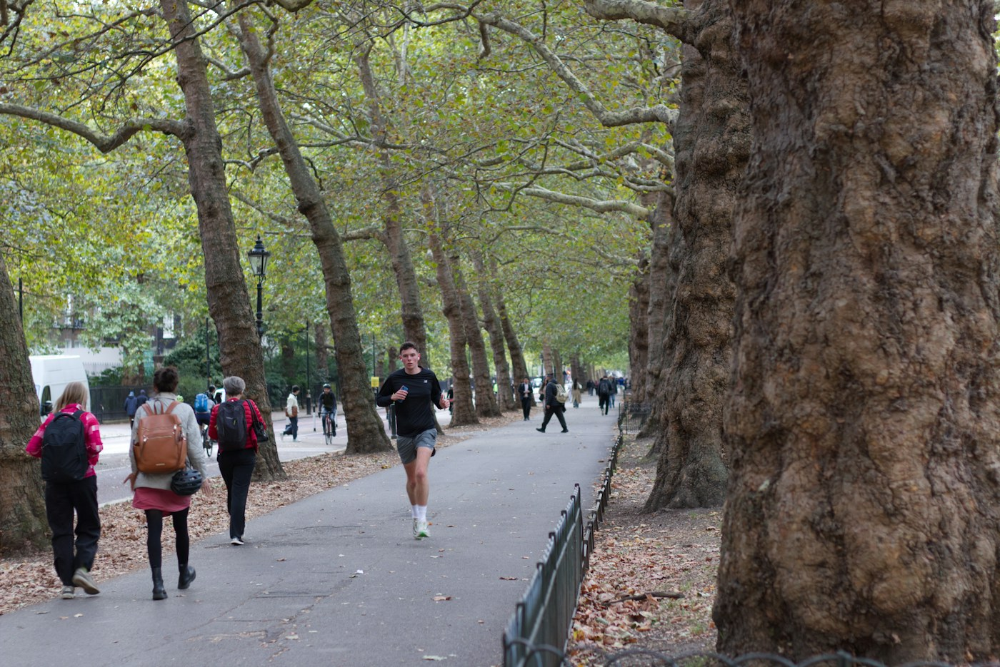
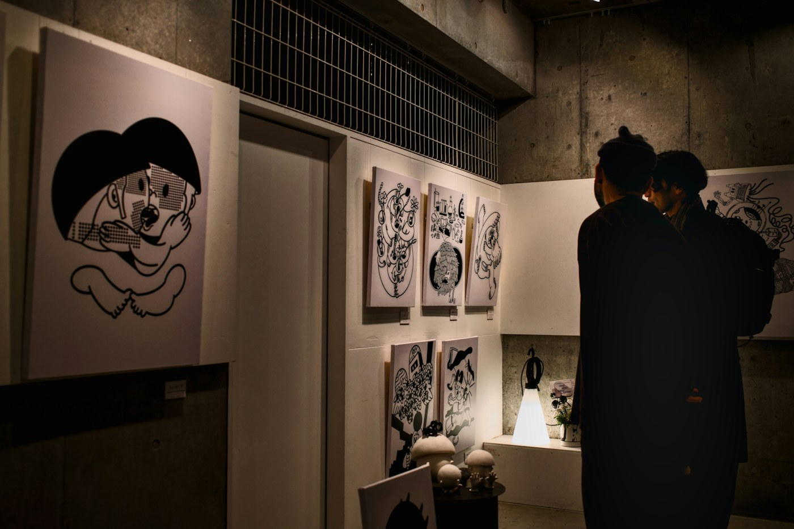
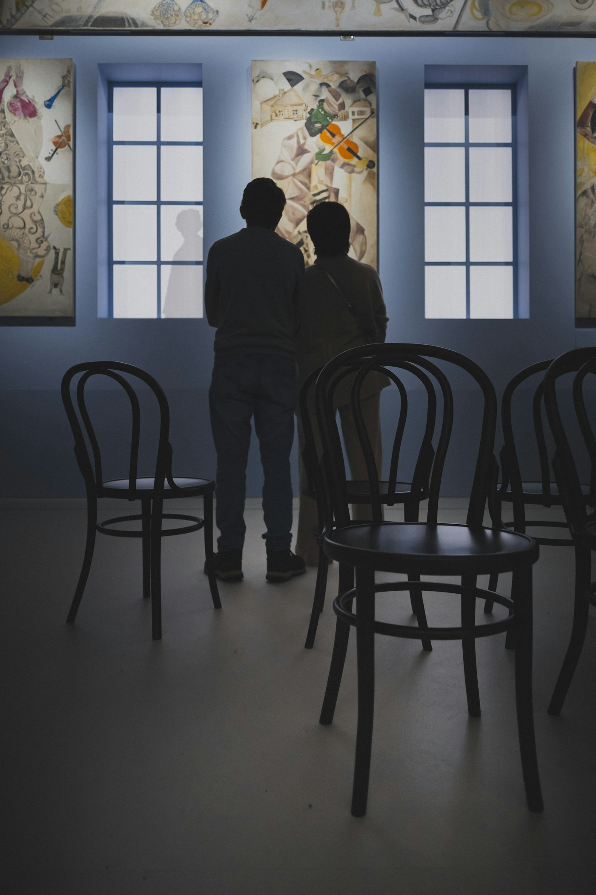
Fotografie stock illustrative: non ritraggono i luoghi fittizi del catalogo. Le recensioni, i servizi e i dati della demo non si riferiscono ai luoghi fotografati.
Immagini distribuite con Unsplash License. Fonti e autori delle immagini:














